E-book de desenho · Pedro Torres
Aprenda o traço de Van Gogh.
Teoria e prática para desenhar como Vincent, do primeiro rabisco à cópia de mestre.
Quero o livro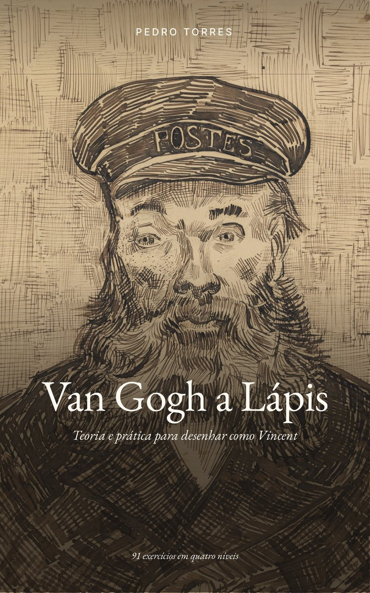
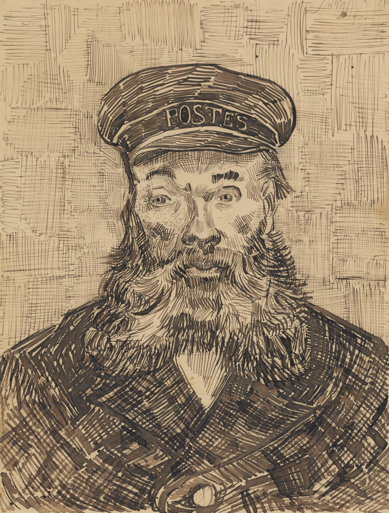
O problema
Imitar o estilo não é a mesma coisa que entender o traço.
Quem tenta copiar Van Gogh costuma encher a folha de tracinhos e redemoinhos. O resultado fica com textura, mas sem volume e sem profundidade.
Nos desenhos dele, cada marca tem uma função. A barba do carteiro Roulin é feita de curvas em leque, o casaco de hachura cruzada, a pele de pontos e o fundo de uma treliça clara. Este livro mostra por que cada traço está onde está e como fazer o mesmo.
Retrato de Joseph Roulin, Arles, 1888. J. Paul Getty Museum.
O que você aprende
A linguagem dele, uma regra de cada vez.
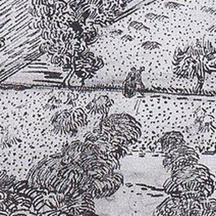
Uma marca para cada coisa
As doze marcas de Arles e onde ele usava cada uma: tracinho no campo, ponto na areia, vírgula na relva.
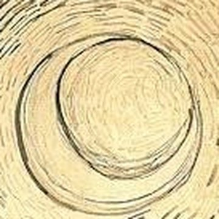
A direção do traço
As cinco leis do fluxo, que fazem o céu girar e a forma aparecer sem contorno.
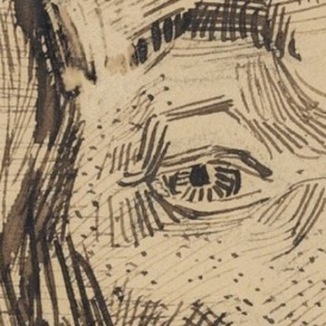
O rosto como terreno
O mapa de direções do rosto: olhos em redemoinho, testa em arcos, barba em leque.
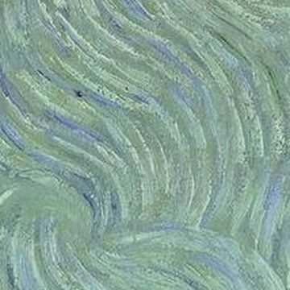
Os autorretratos
Três soluções, de 1887 a 1889: o halo, o fundo calmo e o redemoinho.
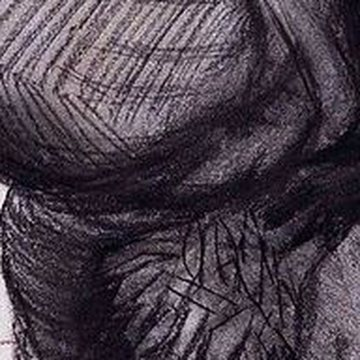
O corpo em aros
Massas ovais e hachura que dá a volta na forma, como os aros de um barril.
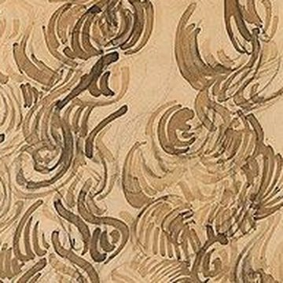
Cópia de mestre
Cinco métodos para copiar uma obra dele, da grade ao desenho de memória.
Por dentro
Um livro de arte que também é um curso.
Obras do próprio Van Gogh com os detalhes ampliados, diagramas, um mapa da vida dele e um catálogo com as obras citadas.
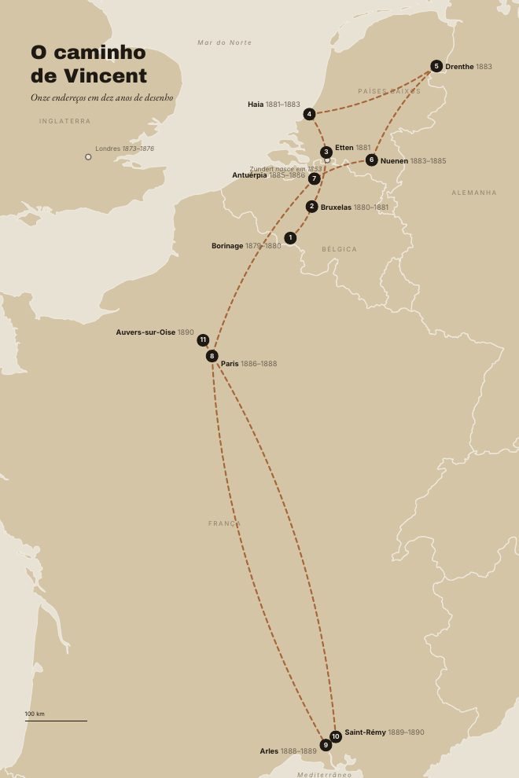
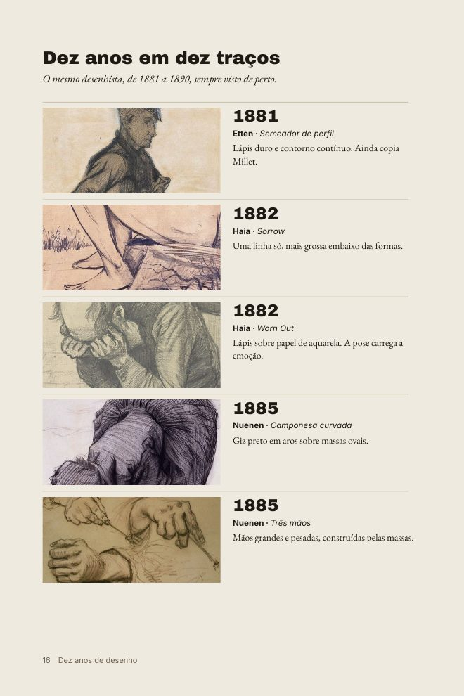
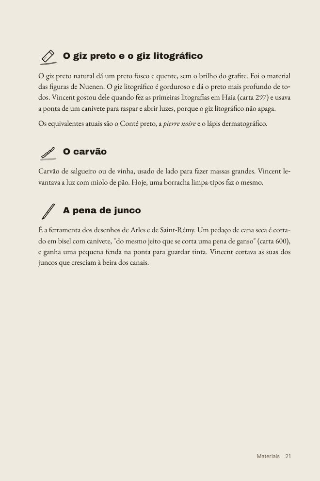
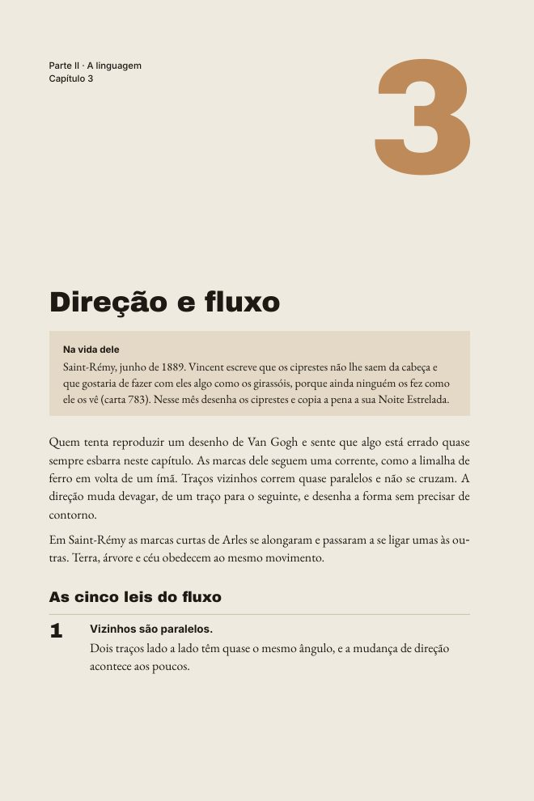
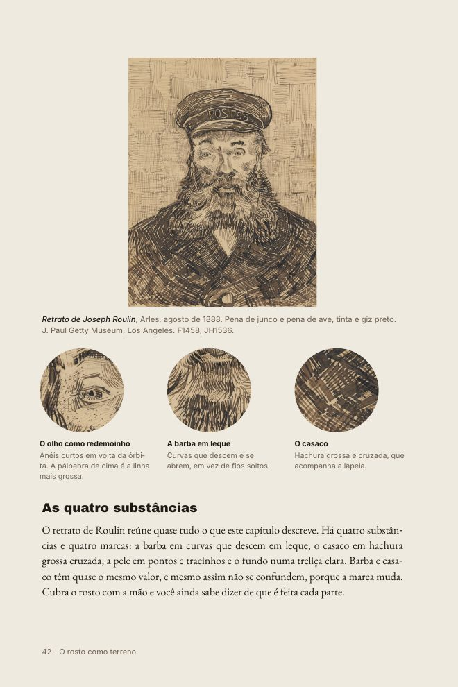
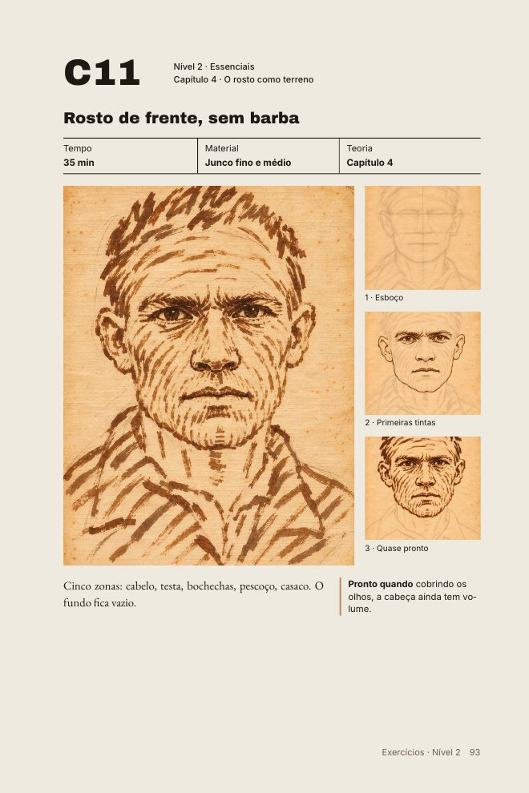
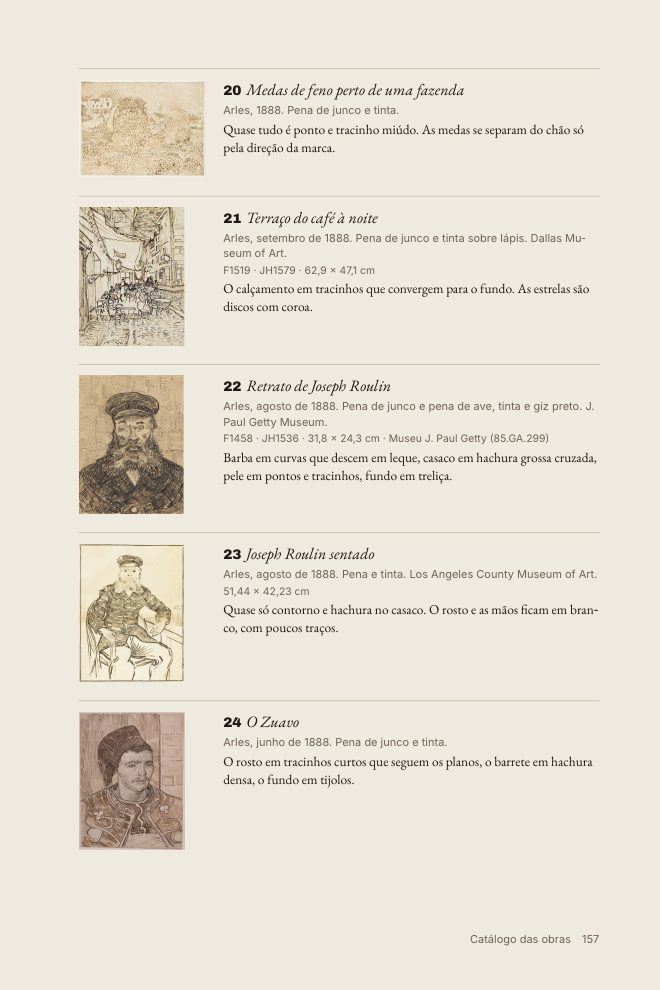
Arraste para ver mais páginas.
A prática
91 exercícios, do esboço ao traço final.
Cada exercício parte de um desenho-modelo e traz o tempo, o material e um critério claro para saber quando está pronto. Doze deles mostram a construção em etapas.
Fundamentos. Uma marca de cada vez, em 8 a 20 minutos.
Essenciais. Os 18 exercícios que formam o núcleo do método.
Aprofundamento. Variações, luz de lado, novas paisagens.
Provas de mestre. Cópias longas e um projeto final seu.
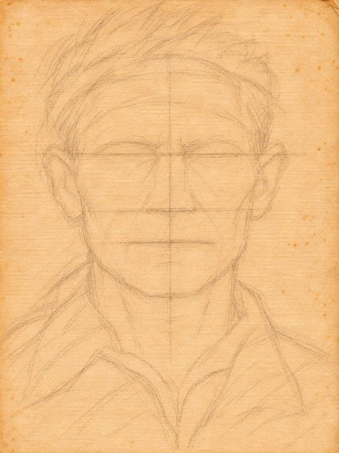
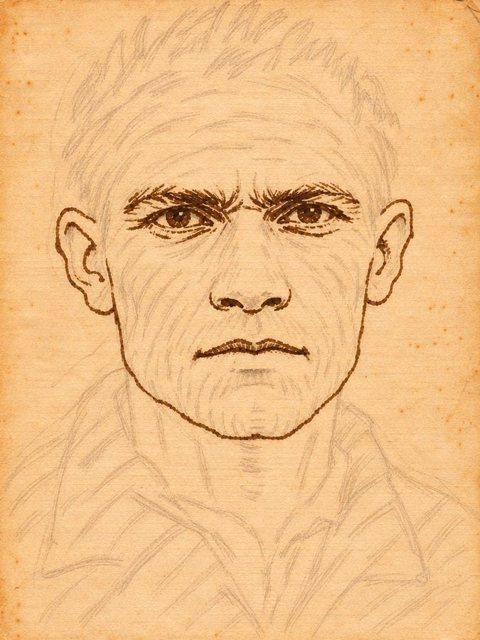
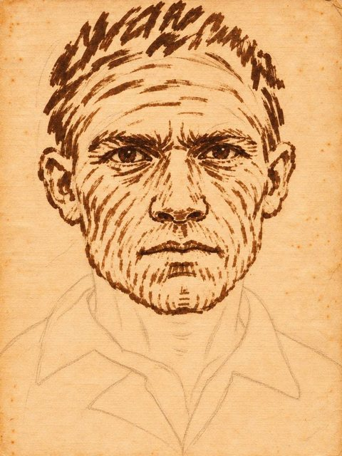
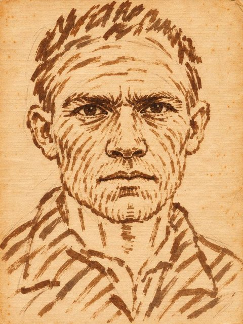
Em 30 segundos
Ele não rabiscava ao acaso.
Cada coisa tem a sua marca, e cada traço segue uma corrente. Quando você enxerga isso, o desenho dele deixa de ser mistério e vira método.
Para quem é
Do primeiro rabisco ao refinamento.
Se você está começando
Leia a Parte I e os três primeiros capítulos e faça o Nível 1 na ordem. Os exercícios são curtos e treinam uma marca por vez.
Se você já desenha
Vá direto aos 18 exercícios essenciais do Nível 2 e depois às cópias de mestre. Funciona no papel e no tablet.
Perguntas
Antes de comprar.
Em que formato o livro vem?
Em PDF ilustrado, diagramado para ler no tablet ou no computador, e em EPUB, que se adapta à tela de leitores digitais e celulares.
Preciso saber desenhar?
Não. O livro indica por onde começar, e o Nível 1 treina uma marca de cada vez, em exercícios de 8 a 20 minutos.
Que material vou usar?
Lápis, giz, carvão e pena, e o livro mostra o equivalente moderno de cada um. Também explica como configurar um pincel no Procreate para imitar a pena de junco.
As obras são de Van Gogh?
As obras citadas e as pranchas são reproduções de desenhos e pinturas dele, em domínio público. Os desenhos-modelo dos exercícios foram feitos para o livro, no estilo das folhas dele, e estão identificados como tal.
O livro trata da pintura dele?
Só do desenho: do lápis, do carvão e da pena. Os autorretratos pintados entram porque cada pincelada é um traço visível, fácil de levar para o papel.
Van Gogh a Lápis
Teoria e prática para desenhar como Vincent. 165 páginas, 91 exercícios e um catálogo das obras.
Comprar o e-bookPDF e EPUB · acesso imediato